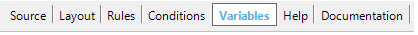

You may define variables in most GeneXus objects. GeneXus objects that allow defining variables, contains a selector named Variables in order to define and manage them.  If you select it, the Variable Editor will be opened. Variables are local, which means that they are accessible only inside the object. If you need to send some variable values to another object, you can call the desired object, sending the variables as parameters to it. After defining a variable, you will be able to use it (inside an allowed section like the Source, Rules, Events, etc.) referencing its name preceded by the & symbol. For example, if you define a variable named &Quantity, then being in a section of the same object where it is allowed to use variables, you can type & and you will be able to select the &Quantity variable or other defined variable. Each variable has some properties in order to set them. The main properties are the following:
Depending on the Data Type property you choose, different related properties are offered to set them.
|
| Backlinks | |||
| Average length property | Based on property | ||
| Dimensions property | Toc:GeneXus - Table of contents | How to define Variables and Arrays | Maximum length property |
| Name property | What is error 403? |